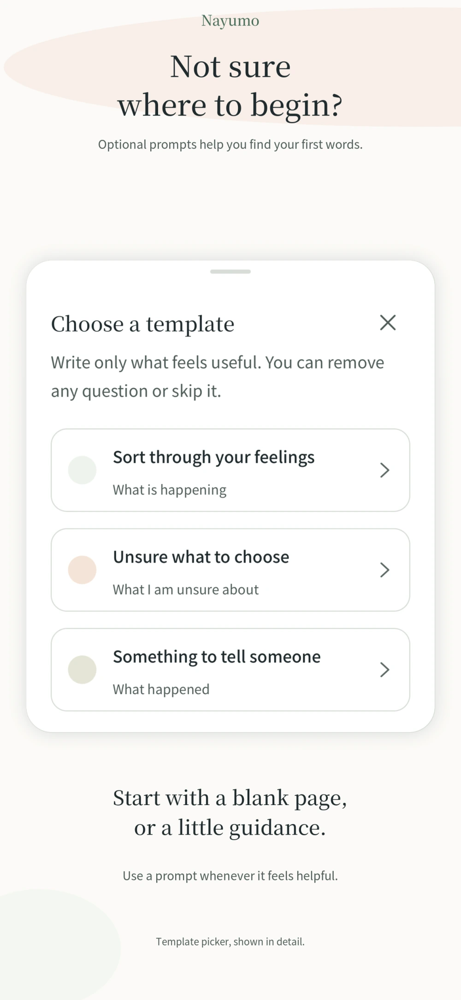
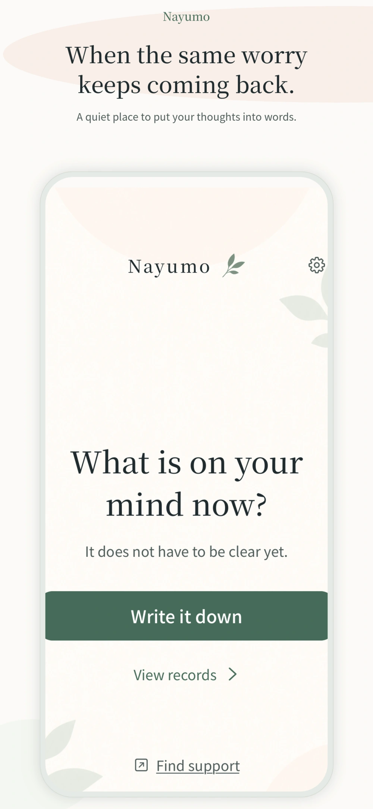
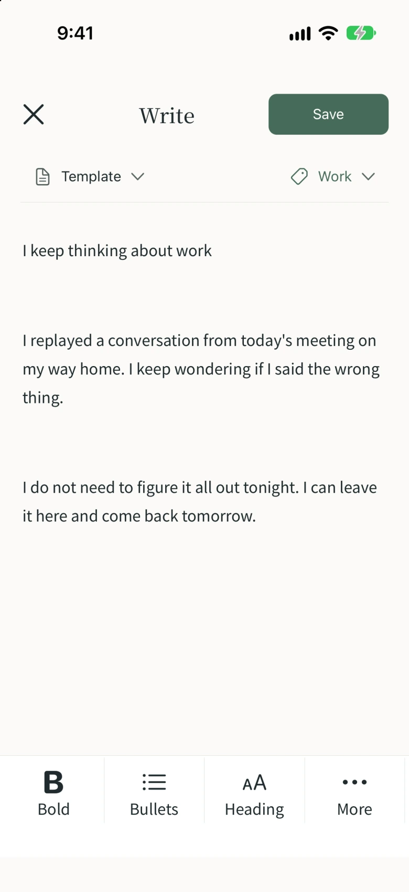
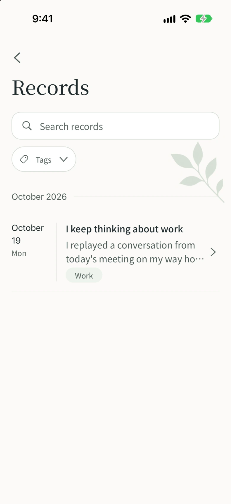
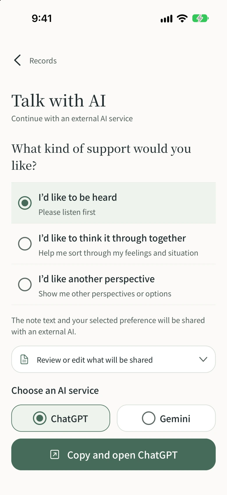

Start wherever
you are.
Write freely, or lean on a prompt. Optional templates help you sort through feelings, weigh a choice, or find words for someone.

Nayumo is a free worry journal for the thoughts that keep coming back. Write them down and leave them for now, even without an answer.


It doesn’t have to make sense yet.
Start with a sentence, at your own pace.
Write freely, or lean on a prompt. Optional templates help you sort through feelings, weigh a choice, or find words for someone.

Save a note without finding an answer. A sentence or a longer page—you choose when to stop.
Find saved notes with search and tags. Past note text stays off the home screen, ready for you when you choose to revisit it.


Be heard. Think it through together. Find another perspective. Prepare a message with the kind of support you’d like.
Conversations happen in an external AI service. You paste and send the message yourself. The service’s own terms and fees may apply.
Your notes are saved locally. You choose and review the words you want to share with an external AI.
Use your device’s biometrics or passcode to lock the app. Choose the protection that suits you in Settings.
Open the app to what’s on your mind now. Past note text appears when you choose to open your records.
Ads and external AI services use a network connection. See our Privacy Policy for details.
Nayumo is a worry journal and notes app: a place to write down worries and feelings and leave them for now. It includes optional prompts, tags, search, and messages you can prepare for external AI services. It is not intended for medical diagnosis or treatment.
Yes, it’s free to use.
Conversations take place in an external service such as ChatGPT or Gemini. In Nayumo, choose the kind of support you’d like, review and edit your message, then copy it. You paste and send it in the AI service yourself.
No. Nayumo does not automatically send your notes to an external AI. You review the message, then copy, paste, and send it yourself. Anything you send is handled under that service’s policies.
Yes. You can write notes and read records saved on your device offline. Ads, external AI services, and support pages need an internet connection.
Nayumo does not provide its own cloud sync. Notes are saved on your device. You can export records as Markdown or ZIP files, but this does not automatically transfer or sync them to another device.
Come back in your own time.